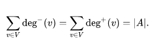
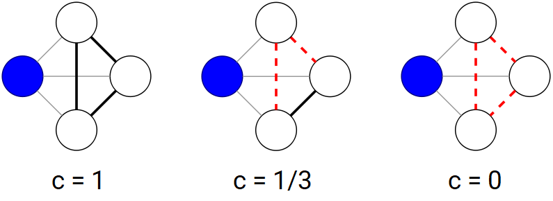
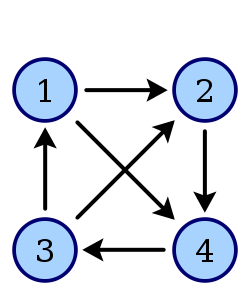

Motivação e Origem dos Dados
Como estudantes de Engenharia de Computação e Informação, somos apaixonados por grafos e seus algoritmos. Acreditamos que este tipo de abstração é muito poderosa e nos permite extrair diversas características importantes para analisarmos e compreendermos como as redes se organizam.
Em um ambiente de Redes Par-a-Par, em que existe uma conectividade ad-hoc muito presente, capturar uma configuração das conexões em um dado momento nos permite transformar todo o sistema em um grafo, convertendo cada peer (par) em um vértice e cada conexão em uma aresta direcionada. Assim, uma aresta partindo do vértice 1 para o vértice 2 significa que o par 1 poderá encaminhar suas requisiçõse para o par 2. Os dados utilizados para esta análise são todos provenientes do serviço Gnutella (cujo funcionamento pode ser visto em detalhes na página Aplicações deste website) coletados em Agosto de 2002. A obtenção dos dados foi realizada pelo Stanford Network Analysis Project (STAMP), da Universidade de Stanford, que os disponibiliza em arquivo de texto.
Abaixo, podemos ver um exemplo meramente ilustrativo mostrando como um grafo desse tipo se parece:

Métricas Buscadas
Algumas características observadas podem nos dar informações sobre o funcionamento da rede. Tendo um grafo G = (V, A), em que V é o conjunto de vértices e A é o conjunto de arestas, estamos particularmente interessados nas seguintes métricas:
distribuição de graus e grau médio: um vértice v ∈ V, em um grafo direcionado, possui duas métricas interessantes. A primeira delas é deg−(v), o grau de entrada, que representa o número de arestas chegando em v, enquanto a segunda, o grau de saída deg+(v), simboliza o número de arestas saindo de v. Por exemplo, na ilustração acima, deg−(3) = 2 e deg+(3) = 1. Intuitivamente, a soma de todos os deg−(v) precisa ser igual à soma de todos os deg+(v), já que toda aresta precisa ter um ponto de partida e um ponto de chegada. Assim, verificamos a seguinte relação:
A soma deg−(v) + deg+(v) para um dado v ∈ V corresponde ao número total de conexões que o par v possuía no momento em que a captura da rede Gnutella foi realizada. Assim, se definirmos deg(v) = deg−(v) + deg+(v) e realizarmos uma estatística em todos os nós, poderemos ter uma noção de grau médio, correspondendo ao número médio de conexões, recebidas e requisitadas, que cada nó da rede possuía.
coeficiente de agrupamento (CA) médio: cada vértice v ∈ V possui seu próprio coeficiente de agrupamento local Cv , que quantifica o quão próximo seus vizinhos estão de formarem um grafo completo (ou seja, com uma aresta entre todo par de vizinhos). Dado o subgrafo formado por todos os vizinhos de v, calculamos Cv através da razão entre o número de arestas existentes sobre o número total de arestas que poderiam existir. O exemplo abaixo ilustra este procedimento para o vértice em azul:
Assim, tendo todos os coeficientes de agrupamento local calculados para cada vértice, podemos falar em um coeficiente de agrupamento médio característico do grafo inteiro, que nada mais é do que a soma de todos os coeficientes de agrupamento local divido pelo número total de vértices.
diâmetro: pense no menor caminho entre cada par de vértices. Por exemplo, na ilustração acima, o caminho mínimo entre os vértices 5 e 1 são as arestas [5→7, 7→4, 4→1]. Assim, definimos o diâmetro do grafo como sendo o comprimento do caminho mais longo entre todos os menores caminhos. A rede Gnutella, na época da coleta destes dados, possuía uma escalabilidade duvidosa (como Jordan Ritter, em 2001, descreveu em "Why Gnutella Can't Scale. No, Really.") e seu protocolo possuía um limite moderado de saltos (7 saltos na versão 0.4). Assim, caso encontremos um diâmetro superior a 7, poderemos validar nossa hipótese de que nem toda busca alcança a rede inteira.
subtorneio máximo: imagine um grafo completo, ou seja, em que cada par de vértices possui uma aresta entre eles. No caso dos grafos orientados, tal configuração é chamada de torneio, e um exemplo ilustrativo com |V| = 4 pode ser visto abaixo:
Em um dado grafo G = (V, A) do Gnutella com milhares de nós, como os que iremos analisar, é intuitivamente inviável que cada nó mantenha |V|–1 conexões e, por consequência, jamais observaremos um torneio. No entanto, se olharmos pra subgrafos de G, iremos encontrar alguns. Por exemplo, quaisquer dois vértices com uma aresta entre si formarão um subtorneio de tamanho 2. Da mesma foma, um triângulo qualquer no grafo corresponde a um subtorneio de tamanho 3. Portanto, surge a pergunta: qual será o tamanho do maior subtorneio que poderemos encontrar num grafo desse tipo?
Nota-se que este problema é equivalente a encontrar um clique máximo num grafo não-direcionado e, portanto, pertence a NP-difícil. Porém, iremos utilizar técnicas de otimização para construir um algoritmo branch-and-bound que utilizará limites primais e duais para ser guiado mais rapidamente à resposta correta, podando sua árvore de busca e, assim, encontrando a resposta em um tempo viável. O artigo do qual este algoritmo foi retirado chama-se "An improved branch and bound algorithm for the maximum clique problem" e encontra-se listado na bibliografia. A existência de subtorneios grandes pode indicar conexões redundantes, utilizando recursos computacionais de forma desnecessária.
Resultados Obtidos
Para diversificarmos nossos resultados, utilizamos diferentes capturas de configuração da rede Gnutella durante o mês de Agosto de 2002. Algumas informações já estavam presentes no repositório de dados do qual os grafos foram retirados, enquanto outras (como a distribuição dos graus e o subtorneio máximo) precisaram ser calculadas para este trabalho. No entanto, não foi possível determinar se os grafos analisados representam a totalidade da rede ou apenas uma parcela. Abaixo, verificamos suas características:
| Data da captura | Nós | Arestas | 1º e 30º maiores indegrees | CA médio | Diâmetro | Tamanho do Subtorneio Máximo |
|---|---|---|---|---|---|---|
| 08/08/2002 | 6 301 | 20 777 | 91 (nó 266) e 67 (nó 368) | 0,0109 | 9 | 5 (Nós 7, 145, 177, 367, 753) |
| 09/08/2002 | 8 114 | 26 013 | 92 (nó 51) e 69 (nó 1309) | 0,0095 | 10 | 5 (Nós 350, 837, 1309, 1365, 4294) |
| 24/08/2002 | 26 518 | 65 369 | 355 (nó 68) e 18 (nó 578) | 0,0055 | 10 | 4 (Nós 16965, 18856, 19887, 21067) |
| 30/08/2002 | 36 682 | 88 328 | 54 (nó 432) e 22 (nó 876) | 0,0063 | 10 | 4 (Nós 4619, 6550, 17034, 26238) |
| 31/08/2002 | 62 586 | 147 892 | 68 (nó 164) e 28 (nó 8299) | 0,0055 | 11 | 4 (Nós 18169, 44996, 45753, 45754) |
Além disso, foi possível construir gráficos mostrando o grau de cada nó da rede. O primeiro gráfco representa a quantidade de nós que possuem um dado grau de entrada. Por exemplo, um nó com grau de entrada igual a 5 possui cinco outras máquinas que tomaram a iniciativa de se conectar a ele. Por outro lado, o segundo gráfico mostra como se distribuem os graus de saída, que correspondem às conexões pelas quais um dado nó encaminhará suas buscas. Por fim, incluímos um gráfico da soma dos graus de entrada e saída de cada nó, que apelidamos de grau total. Os dados estão disponíveis abaixo para os cinco grafos analisados neste trabalho:
Análise dos Resultados
Uma das primeiras conclusões a qual chegamos é que não existem nós de grau total 0 nos dados, o que significa que todos os pares estavam mantendo alguma conexão. De acordo com o gráfico dos Graus de Saída, 60% a 75% dos nós possuíam grau de saída 0 e estavam apenas servindo conteúdo a outros pares. Por outro lado, nós que requisitavam uma busca se conectavam, em geral, a 9 ou 10 outros pares para realizá-las.
O diâmetro calculado para as redes indica que, de fato, uma busca não alcança a rede inteira (devido ao limite máximo de 7 saltos na versão 0.4). Portanto, caso um conteúdo não esteja bem distribuído ao longo dos pares, existe uma chance dele existir e mesmo assim não ser encontrado. Notamos também que o tamanho dos subtorneios máximos é bastante pequeno, mesmo quando analisamos mais de 60 000 nós. Isto talvez possa indicar uma boa distribuição das conexões entre os pares, minimizando o número de conexões redundantes entre a mesma concentração de nós. Esta informação é coerente com o coeficiente de agrupamento (CA) do grafo, que resultou em um número razoavelmente pequeno em todos os testes.
Por fim, notamos que uma tímida parcela dos nós da rede possuem graus de entrada excepcionalmente elevados. De fato, ao analisarmos os maiores graus de entrada (indegrees) do grafo, notamos a existência de pares diferenciados, aos quais um grande número de outros nós do grafo se conectam. Na rede obtida no dia 08/08/2002, por exemplo, há pelo menos 30 pares com grau de entrada maior ou igual a 67, sendo que o par com o maior grau de entrada mantém surpreendentes 91 conexões. No grafo do dia 24/08/2002, um fenômeno mais incrível ainda pôde ser observado: o par 68 mantinha exatos 355 outros pares conectados a ele. Não há um erro de análise: ao pesquisarmos pelo número "68" no arquivo de texto de entrada, verificamos que de fato existem 355 ocorrências descrevendo suas arestas. Encontramos, portanto, os famosos "superpares", que agem de forma similar a como um servidor se comporta em uma rede cliente-servidor. Concluímos, ainda, que tais máquinas provavelmente possuem um hardware mais potente do que a média das folhas do grafo (que fazem o papel de clientes).
Conclusão
Esperamos que este trabalho, envolvendo Teoria dos Grafos e Redes de Computadores, tenha ajudado a ampliar o entendimento do leitor sobre como redes par-a-par funcionam na prática. Um estudo de caso como este possibilita evidenciar os pontos fortes e fracos de um protocolo, sendo capaz de sugerir onde as melhorias devem ocorrer. Apesar do exemplo analisado ser antigo, datando de 2002, isto se deve à pouca disponibilidade de dados encontrados. Caso novas coletas sejam realizadas em outros sistemas no futuro, esperamos que esta pesquisa possa servir de ponto de partida para inspirar novos resultados.